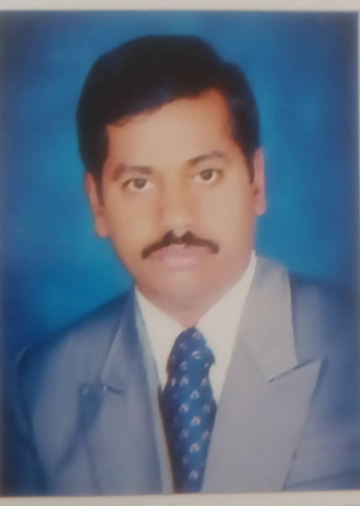

Dr.S.V.Rajashekararadhya
Summary
I am dedicted teaching professional and committment towards my students to share my technical knowledge.
Education
- Bachelor of Engieering in Electrical and Electronics from AIT Chikkamagalur, Mysore University (1987-1991)
- Master of Engineering in Power Electronics from UVCE Bengaluru, Bengaluru University (1998-2000)
- PhD from faculty of Electrical Engineering, College of Engineering, Guindy, Anna UNiversity Chennai
(2006-2009)
Work Experience
- As Lecturer at BIET Davanagere (1992-1995)
- As Lecturer at SJMIT Chitradurga (1995-2000)
- At AIT Chickkamagalur in the department of Electronics & Communication engineering.
- As Lecturer (2000-2004)
- As Senior Lecturer (2004-2006)
- As Assitant Professor (2006-2010)
- As Professor 2010-2012
- At present working as Professor in the department of Elecronics & Communication Engineering at KIT Tiptur
(2012-till date)
- Worked as Professor and HOD Elecronics & Communication (2012-2014)
- Worked as Principal (2014-2015)
- Other Responsibilities -- NBA coordinator, IQAC member, Academic Audit Committee Chief
Coordinator
Skills
- Organisational skills
- Admininistrative sklls
- Effective teaching and communication skills
Awards and Certifications
- Full Stack Software Developer from IIIT Roorki and GL (2021)
Other
© Dr.S.V.Rajashekraradhya. All rights reserved